| 日付 | 2012年10月25日（木） |
|---|---|
| メンバー | 単独 |
| アクセス | 電車 |
金沢出張に出かけた際に、兼六園に寄って帰ることにする。
日本三名園に選ばれている名高い日本庭園だ。
兼六園と金沢城を結ぶ石川橋。
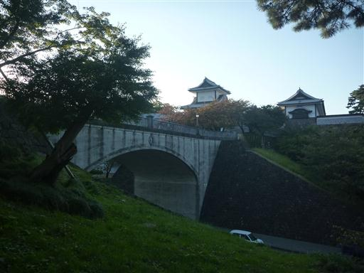
兼六園の桂坂口から入園する。
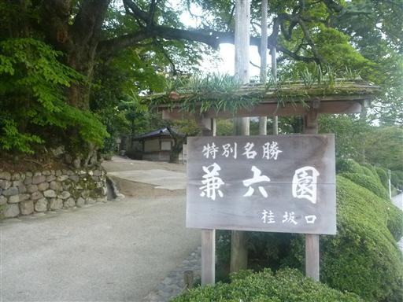
時刻はすでに4時。5時には閉園となるため園内は閑散としている。
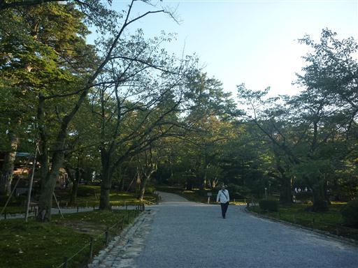
眺望台。背景に見える山は医王山だ。
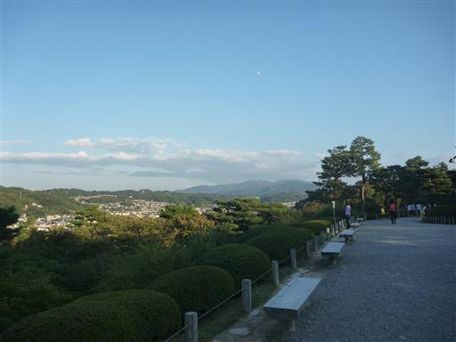
唐崎松。枝が池の水面上を這っている。
琵琶湖の松の名所・唐崎から種子を取り寄せて育てたらしい。
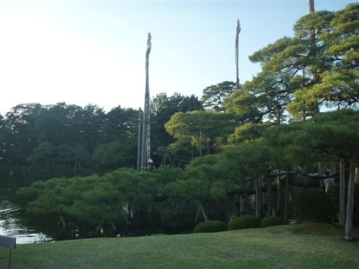
雁行橋。雁が列をなして飛んでいる姿につくられている。
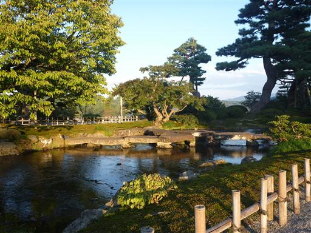
七福神山。山というほど土の盛り上がりはないが…
七福神になぞらえた七つの自然石が配置されている。
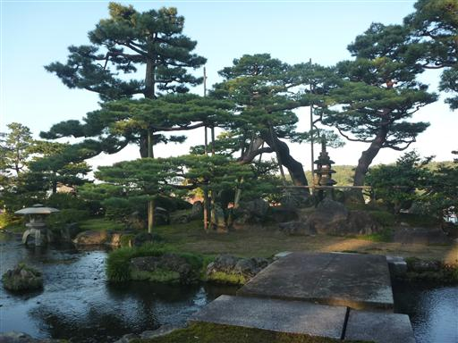
日本武尊の像。
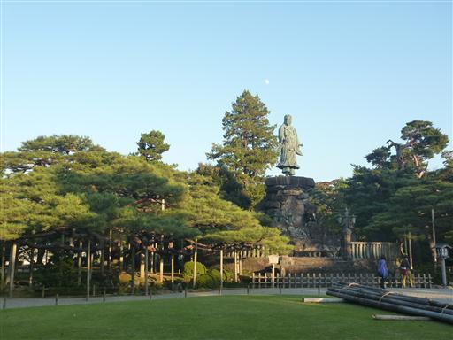
御室の塔。御室御所（仁和寺）の塔を模したものと言われている。
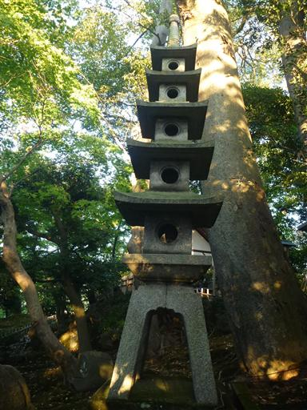
庭を埋め尽くす緑の苔が美しい。
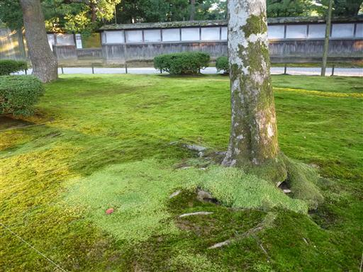
だいぶ日が傾いてきた。
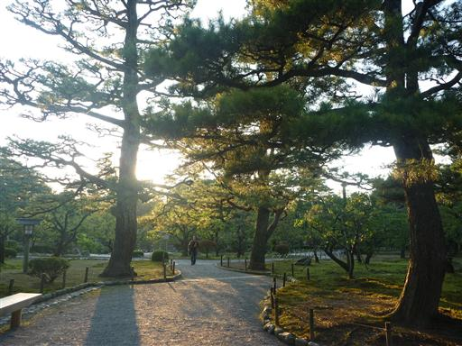
梅林。20種200本の梅が植えられている。
梅の咲く季節はさぞかしきれいだろう。
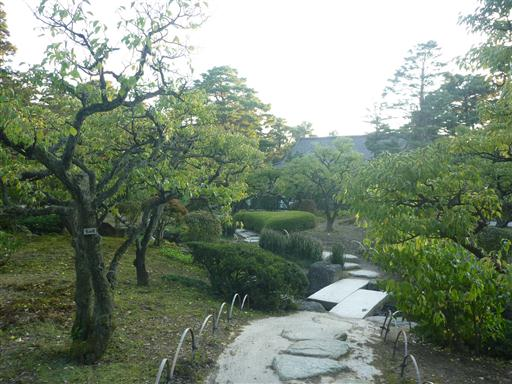
松の傷。太平洋戦争時、軍用機の燃料にするために松脂を採取した跡。
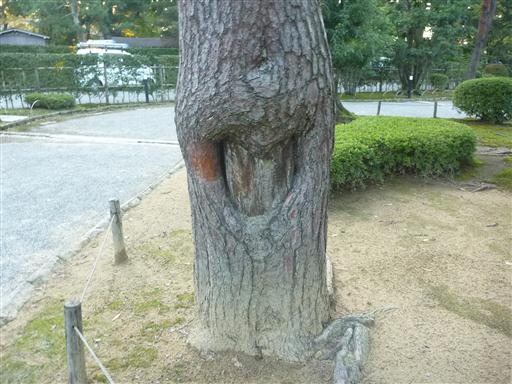
時雨亭。明治初期に取り壊されたが、2000年に再建された。
中で茶を頂くことができる。
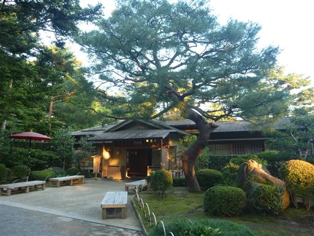
根元に穴が開いた不気味な木が立っている。
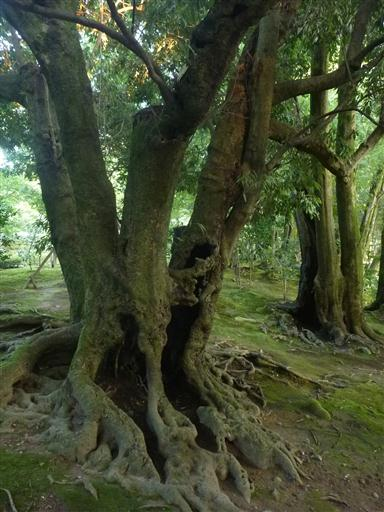
霞ヶ池。兼六園の中心部にある大きな池で兼六園を代表する景観だ。
池の中に蓬莱島という島がある。
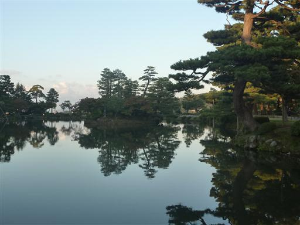
栄螺山。霞ヶ池を掘り広げたときの土でつくられた築山。
頂上へ至る道が螺旋に作ってあることから、この名がある。
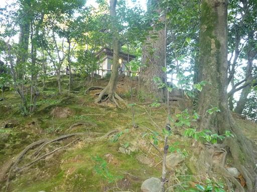
山頂には避雨亭と呼ばれる御亭がある。
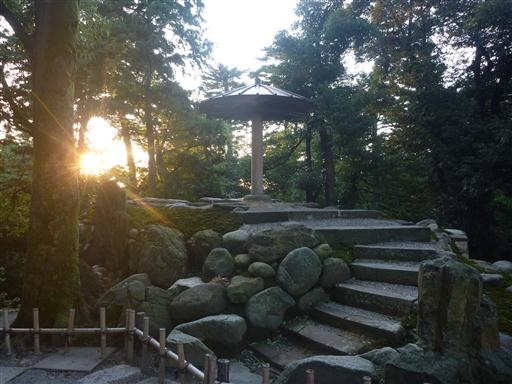
噴水。何の変哲もない噴水だが、日本最古のものと言われている。

徽軫（ことじ）灯籠と虹橋。変わった形の灯篭だ。
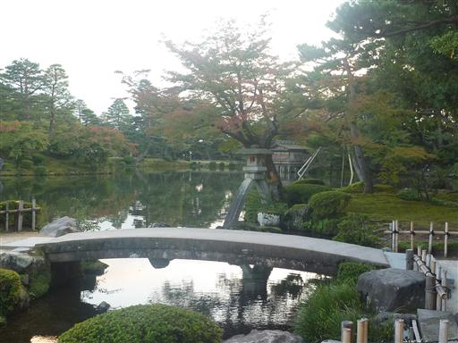
日没の時間。木々の向こうに太陽が落ちていく。
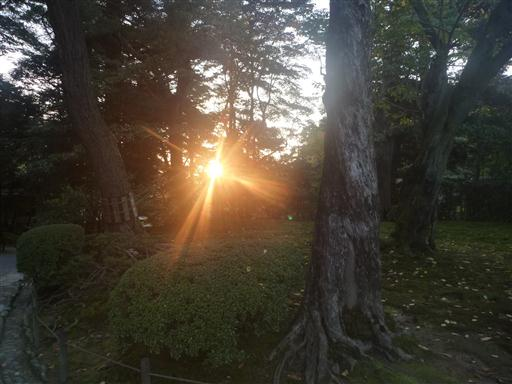
夕日に照らされて松の木が赤く光っている。
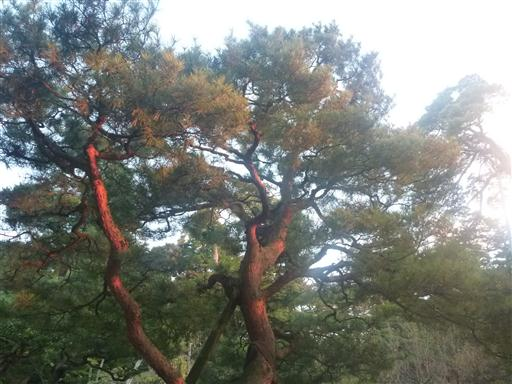
瓢池（ひさごいけ）。霞ヶ池に比べると陰気な池だ。
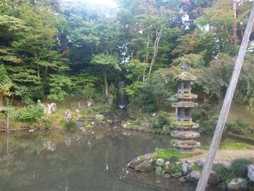
竹根石手水鉢。ヤシ類の茎と根の化石で、学術上極めて珍しいらしい。
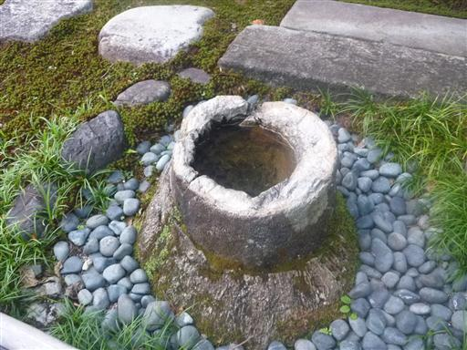
兼六園は5時で閉園となったため、園を後にする。
園前で軒を連ねる土産物屋も店じまいの準備をしている。
1時間弱の兼六園散策だった。

兼六園の向かいにある金沢城公園。こちらも5時で閉まるようで入ることはできなかった。
次に金沢に来たときには、こちらに立ち寄ってみようと思う。
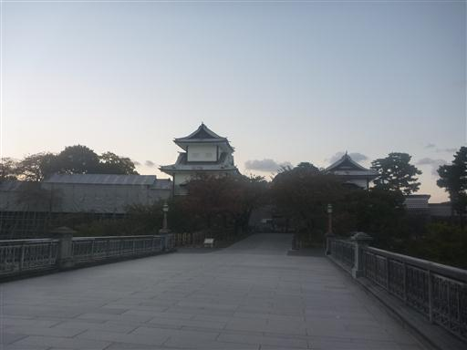